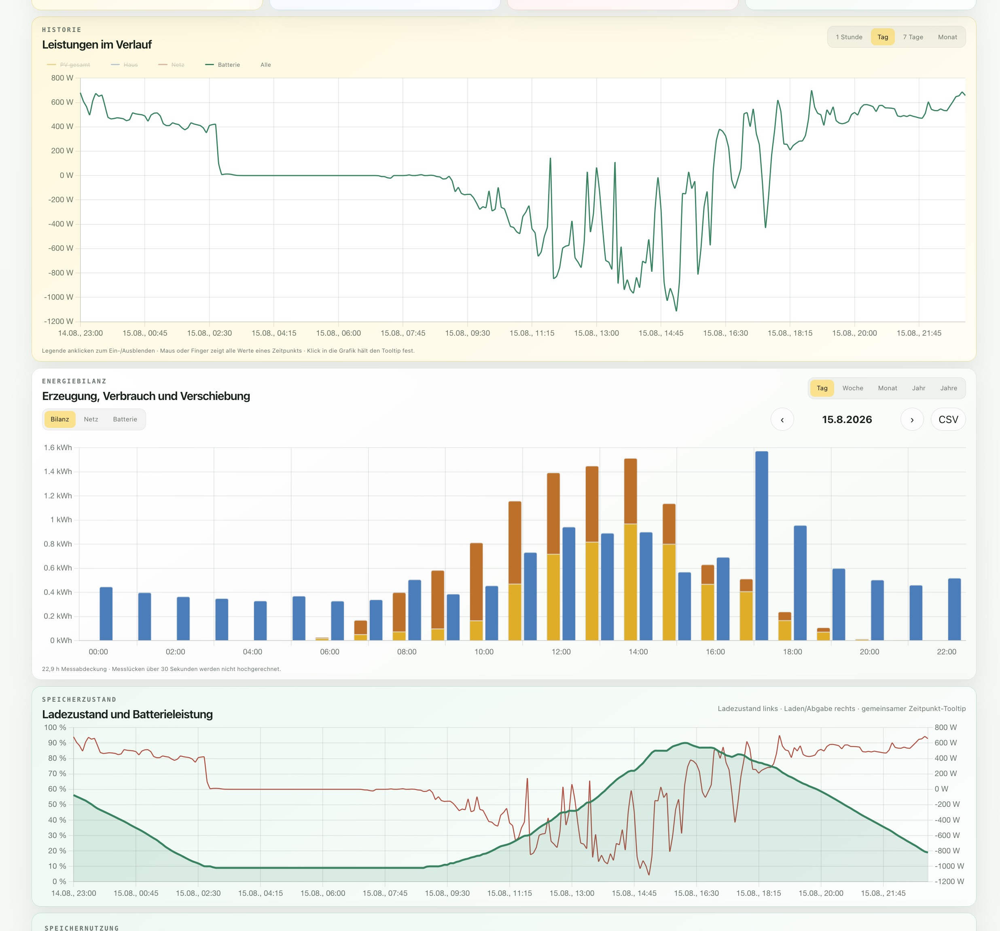
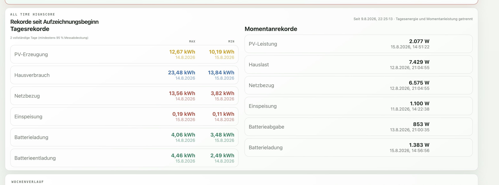
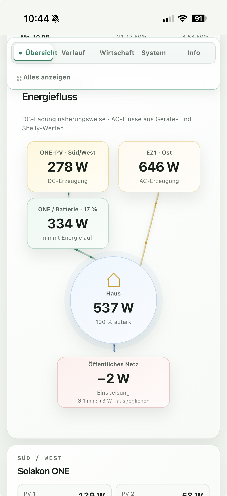

PV, Hauslast, Netz und Batterie in einer gemeinsamen AC-seitigen Bilanz.
FUNKTIONEN
Vom Fünf-Sekunden-Wert zur Langzeitanalyse
Interaktive Leistungskurven und kalenderbasierte Energieblöcke.
SOC, Lade-/Entladeleistung, Temperaturen und nutzbare Energie.
Geschützte CSV- und ZIP-Exporte für eigene maschinelle Auswertungen.
GALERIE
Desktop und mobil



ARCHITEKTUR
Vier lokale Quellen, ein konsistentes Datenmodell
Solakon ONE
Modbus TCPAPsystems EZ1
Local HTTPShelly Pro 3EM
RPC/HTTPTasmota IR
HTTPFastAPI
SQLite/WAL
Chart.js
Modbus TCPAPsystems EZ1
Local HTTPShelly Pro 3EM
RPC/HTTPTasmota IR
HTTPFastAPI
SQLite/WAL
Chart.js
Python · FastAPI · Uvicorn · SQLite · Vanilla JavaScript · Chart.js · systemd